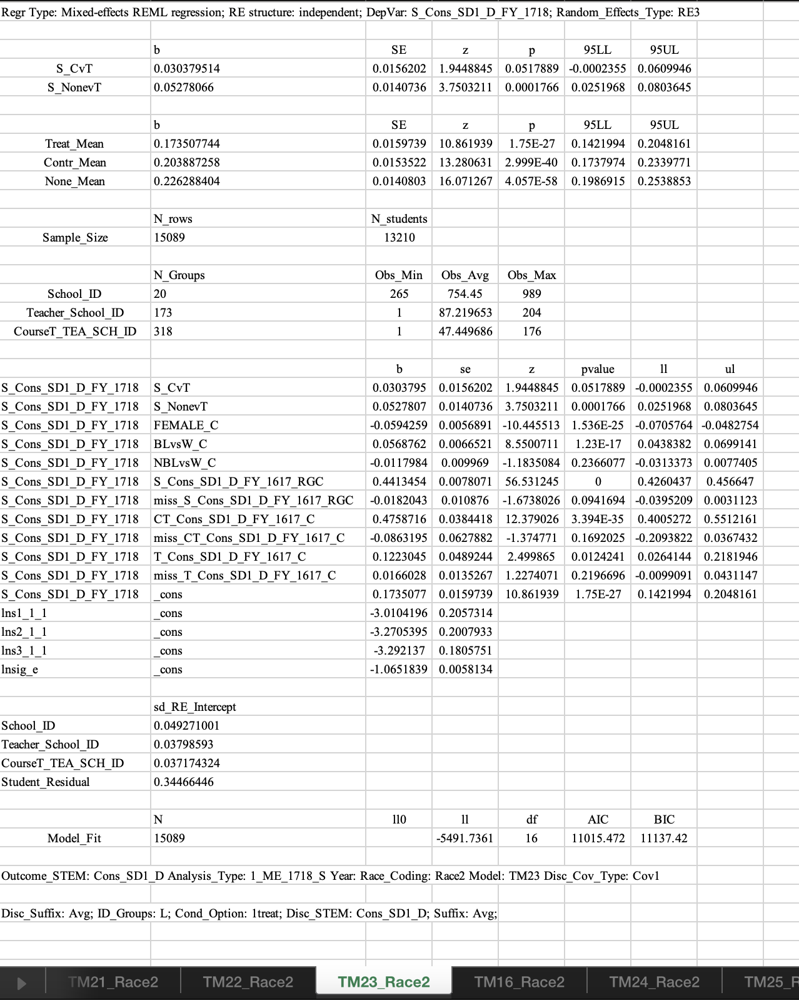

library(haven) #reading in datasets & merging
library(tidyverse) #for piping
ed <- read_dta("~/Library/CloudStorage/Box-Box/ED Files/Empathic_Disc/Desc_Stats/Paper1/Data_OUT/Teacher/Jun_2020_ALL_Teacher_ID_Study_ME_1718.dta")
stu <- read_dta("~/Library/CloudStorage/Box-Box/ED Files/Empathic_Disc/Analyses/For_Upload/Sci_Advances/Datasets/S_Course_Info_1718_Study_L2_ALL.dta") #20456
my.data <- merge(ed, stu, by = "Math_Teacher_ID_L")
rm(ed, stu)
#TM 23 settings
Disc_Suffix <- "Avg"
Cond_Option <- "1treat"
Cond_Time <- "Fall"
Filter_Criterion <- "Drop_None_Rows"
RE_Type <- "RE3"
Mean_Center_Sample <- "ITT"
Sample_Type <- "ALL"1_Execute_ME_1718_S.do
Script 1: Main Effect of Condition on 1718 Outcomes for Students with 1718 Assigned Teachers
do “Run_Models/1_Execute_ME_1718_S.do”
The purpose of this markdown is to replicate the MLM model ran in Script 1.
Below is the output from the .do file of the model ran/published:

Loading Libraries & Data
Applying Filters
#Filtering Outcome Missing
my.data <- my.data %>% filter(!is.na(S_Cons_SD1_D_FY_1718)) #20456 0 dropped
#Filtering Gender Missing
my.data <- my.data %>% filter(!is.na(S_Orig_Gender_1718)) #20456 0 dropped
#Filtering Ethnicity Missing
my.data <- my.data %>%
filter(!is.na(S_Orig_Ethnicity_1718)) #20456 0 dropped
#Filtering to exclude 6th graders
my.data <- my.data %>% filter(S_GradeLevel_1718 != 6) # 15637 new nrow
###DROP_NONE_ROWS for TM23 Model
my.data$N_1RA_Fall_ITT_CT_TS <- ifelse(my.data$N_1treat_Fall_ITT_CT_TS
== 1 | my.data$N_1contr_Fall_ITT_CT_TS == 1, 1, 0)
#"At least one math CT_TS assigned to treatment in Fall semester 2017"
my.data <- my.data %>% filter(T_condition_ITT_L != "none" | N_1RA_Fall_ITT_CT_TS !=1 )Dataset Information
Our filters result in dataset/group n’s consistent with the previously puvlished model.
nrow(my.data) # Sample Size[1] 15089length(table(my.data$School_ID_L)) #20 schools[1] 20length(table(my.data$Math_Teacher_ID_L)) #173 teachers[1] 173length(table(my.data$Math_CourseT_TEA_SCH_ID_L))[1] 318# 318 COURSES (?)
length(table(my.data$Student_ID)) #13210 students[1] 13210Creating Variables & Centered Variables for MLM
#MAKING S_NonevT
if(Sample_Type == "ALL" & Cond_Option == "1treat") {
my.data$S_NonevT <- NULL
my.data$S_NonevT <-
ifelse(my.data$N_1treat_Fall_ITT_CT_TS == 0 & my.data$N_1contr_Fall_ITT_CT_TS
== 0, 1,
ifelse(my.data$N_1treat_Fall_ITT_CT_TS == 0 & my.data$N_1contr_Fall_ITT_CT_TS
== 1, 0,
ifelse(my.data$N_1treat_Fall_ITT_CT_TS == 1, 0, NA)))
}
#MAKING S_CvT
if(Cond_Option == "1treat") {
my.data$S_CvT <- NULL
my.data$S_CvT <-
ifelse(my.data$N_1treat_Fall_ITT_CT_TS == 0 & my.data$N_1contr_Fall_ITT_CT_TS
== 1, 1,
ifelse(my.data$N_1treat_Fall_ITT_CT_TS == 1, 0, ifelse(Sample_Type == "ALL" & my.data$N_1treat_Fall_ITT_CT_TS
== 0 &
my.data$N_1contr_Fall_ITT_CT_TS == 0, 0, NA))) }
#RACE 2 CODING
#*Student Race: Black/Latino vs White; Other vs White
#*Black or Latino vs White
##label variable BLvsW "1=Student Race is Black or Latino vs White
my.data$BLvsW <- ifelse(my.data$S_Asian_D_1718 == 1 |
my.data$S_Native_D_1718 == 1 | my.data$S_Mixed_D_1718 == 1 | my.data$S_White_D_1718 == 1, 0, ifelse(my.data$S_Black_D_1718 == 1|
my.data$S_Hispanic_D_1718 == 1, 1, NA))
#Non Black or Latino vs White
#label variable NBLvsW "1=Student Race is Other vs White"
my.data$NBLvsW <- ifelse(my.data$S_Asian_D_1718 == 1 |
my.data$S_Native_D_1718 == 1 | my.data$S_Mixed_D_1718 == 1, 1, ifelse(my.data$S_Black_D_1718 == 1 | my.data$S_Hispanic_D_1718 == 1 |
my.data$S_White_D_1718 == 1, 0, NA ))
#Grand_Sample = C Grand mean centering subtracts the grand mean of the predictor using the mean from the full sample ( X ).
#RG_Mean_Center = RGC Group mean centering subtracts the individual's group mean ( j X ) from the individual's score
my.data$BLvsW_C <- my.data$BLvsW -
mean(my.data$BLvsW, na.rm = T)
my.data$NBLvsW_C <- my.data$NBLvsW -
mean(my.data$NBLvsW, na.rm = T)
#MAKING FEMALE_C table(my.data$S_Orig_Gender_1718)
my.data$FEMALE <-
ifelse(my.data$S_Orig_Gender_1718 == "F", 1, 0)
my.data$FEMALE_C <- my.data$FEMALE -
mean(my.data$FEMALE, na.rm = T)
#MAKING T_Cons_SD1_D_FY_1617_C
my.data$T_Cons_SD1_D_FY_1617_Avg_C <- my.data$T_Cons_SD1_D_FY_1617_Avg -
mean(my.data$T_Cons_SD1_D_FY_1617_Avg, na.rm = TRUE)
#MAKING CT_Cons_SD1_D_FY_1617_C
my.data$CT_Cons_SD1_D_FY_1617_Avg_C <- my.data$CT_Cons_SD1_D_FY_1617_Avg -
mean(my.data$CT_Cons_SD1_D_FY_1617_Avg, na.rm = TRUE)
#MAKING miss_CT_Cons_SD1_D_FY_1617_C #\*Replace for Missing Values
#replace `New_Var_Name'_C = 0 if`miss_MVI' == 1
my.data$miss_CT_Cons_SD1_D_FY_1617_C <- my.data$CT_Cons_SD1_D_FY_1617_Avg_C
my.data$miss_CT_Cons_SD1_D_FY_1617_C[is.na(my.data$CT_Cons_SD1_D_FY_1617_Avg_C)] <- 0
#MAKING miss_T_Cons_SD1_D_FY_1617_C #\*Replace for Missing Values
#replace `New_Var_Name'_C = 0 if`miss_MVI' == 1
my.data$miss_T_Cons_SD1_D_FY_1617_C <- my.data$T_Cons_SD1_D_FY_1617_Avg_C
my.data$miss_T_Cons_SD1_D_FY_1617_C[is.na(my.data$T_Cons_SD1_D_FY_1617_Avg_C)] <- 0
#MAKING S_Cons_SD1_D_FY_1617_RGC #CT_Teacher_ID IS THE GROUP? Cant find, only Math_Teacher_ID_L
my.data <- my.data %>%
group_by(Math_Teacher_ID_L) %>% #173 groups
mutate(S_Cons_SD1_D_FY_1617_RGC = S_Cons_SD1_D_FY_1617 -
mean(S_Cons_SD1_D_FY_1617, na.rm = TRUE))
#MAKING miss_S_Cons_SD1_D_FY_1617_RGC #replace
#`New_Var_Name'_RGC = 0 if`miss_MVI' == 1
my.data$miss_S_Cons_SD1_D_FY_1617_RGC <- my.data$S_Cons_SD1_D_FY_1617_RGC
my.data$miss_S_Cons_SD1_D_FY_1617_RGC[is.na(my.data$S_Cons_SD1_D_FY_1617_RGC)] <- 0##RUNNING THE MODEL
Regr Type: Mixed-effects REML regression;
RE structure: independent;
DepVar: S_Cons_SD1_D_FY_1718;
Random_Effects_Type: RE3
Outcome_STEM: Cons_SD1_D
Analysis_Type: 1_ME_1718_S
Race_Coding: Race2
Model: TM23
Disc_Cov_Type: Cov1
Disc_Suffix: Avg;
ID_Groups: L;
Cond_Option: 1treat;
Disc_STEM: Cons_SD1_D;
Suffix: Avg;
IVs: S_CvT S_NonevT FEMALE_C BLvsW_C NBLvsW_C S_Cons_SD1_D_FY_1617_RGC miss_S_Cons_SD1_D_FY_1617_RGC CT_Cons_SD1_D_FY_1617_C miss_CT_Cons_SD1_D_FY_1617_C T_Cons_SD1_D_FY_1617_C miss_T_Cons_SD1_D_FY_1617_C
Loading Libraries
library(lme4)
library(lmerTest)
library(compiler)
library(broom)Creating Model
lmm1 <- glmer(S_Cons_SD1_D_FY_1718 ~ S_CvT + S_NonevT + FEMALE_C +
BLvsW_C + NBLvsW_C + S_Cons_SD1_D_FY_1617_RGC +
miss_S_Cons_SD1_D_FY_1617_RGC + CT_Cons_SD1_D_FY_1617_Avg_C +
miss_CT_Cons_SD1_D_FY_1617_C + T_Cons_SD1_D_FY_1617_Avg_C +
miss_T_Cons_SD1_D_FY_1617_C + (1 |
School_ID_L/Math_Teacher_ID_L/Math_CourseT_TEA_SCH_ID_L), family =
binomial(link="logit"), control = glmerControl(optimizer = "bobyqa"),
data = my.data)Model Summary Comparisons
Model Output does not match published output.
summary(lmm1)Generalized linear mixed model fit by maximum likelihood (Laplace
Approximation) [glmerMod]
Family: binomial ( logit )
Formula: S_Cons_SD1_D_FY_1718 ~ S_CvT + S_NonevT + FEMALE_C + BLvsW_C +
NBLvsW_C + S_Cons_SD1_D_FY_1617_RGC + miss_S_Cons_SD1_D_FY_1617_RGC +
CT_Cons_SD1_D_FY_1617_Avg_C + miss_CT_Cons_SD1_D_FY_1617_C +
T_Cons_SD1_D_FY_1617_Avg_C + miss_T_Cons_SD1_D_FY_1617_C +
(1 | School_ID_L/Math_Teacher_ID_L/Math_CourseT_TEA_SCH_ID_L)
Data: my.data
Control: glmerControl(optimizer = "bobyqa")
AIC BIC logLik deviance df.resid
8833.7 8922.4 -4404.8 8809.7 12016
Scaled residuals:
Min 1Q Median 3Q Max
-2.8564 -0.4050 -0.2383 -0.0818 9.2210
Random effects:
Groups Name Variance
Math_CourseT_TEA_SCH_ID_L:(Math_Teacher_ID_L:School_ID_L) (Intercept) 0.09657
Math_Teacher_ID_L:School_ID_L (Intercept) 0.08374
School_ID_L (Intercept) 0.54952
Std.Dev.
0.3108
0.2894
0.7413
Number of obs: 12028, groups:
Math_CourseT_TEA_SCH_ID_L:(Math_Teacher_ID_L:School_ID_L), 280; Math_Teacher_ID_L:School_ID_L, 160; School_ID_L, 20
Fixed effects:
Estimate Std. Error z value Pr(>|z|)
(Intercept) -1.96420 0.19824 -9.908 < 2e-16 ***
S_CvT 0.09561 0.14457 0.661 0.50839
S_NonevT 0.17254 0.12481 1.382 0.16683
FEMALE_C -0.40118 0.05609 -7.152 8.54e-13 ***
BLvsW_C 0.19308 0.06301 3.064 0.00218 **
NBLvsW_C -0.06569 0.10299 -0.638 0.52360
S_Cons_SD1_D_FY_1617_RGC 2.21310 0.05987 36.967 < 2e-16 ***
CT_Cons_SD1_D_FY_1617_Avg_C 4.50174 0.38961 11.554 < 2e-16 ***
T_Cons_SD1_D_FY_1617_Avg_C 2.64880 0.47437 5.584 2.35e-08 ***
---
Signif. codes: 0 '***' 0.001 '**' 0.01 '*' 0.05 '.' 0.1 ' ' 1
Correlation of Fixed Effects:
(Intr) S_CvT S_NnvT FEMALE BLvW_C NBLW_C S_C_SD CT_C_S
S_CvT -0.382
S_NonevT -0.449 0.582
FEMALE_C 0.012 0.008 0.011
BLvsW_C -0.011 0.009 0.006 -0.043
NBLvsW_C -0.003 0.011 0.010 0.016 0.283
S_C_SD1_D_F -0.042 0.012 0.022 0.081 -0.050 0.009
CT_C_SD1_D_ -0.047 0.047 -0.003 -0.019 -0.086 0.023 -0.034
T_C_SD1_D_F -0.006 0.139 -0.090 0.009 -0.050 -0.004 0.046 -0.397
fit warnings:
fixed-effect model matrix is rank deficient so dropping 3 columns / coefficientsTable of estimates with 95% CI
se <- sqrt(diag(vcov(lmm1)))
(tab <- cbind(Est = fixef(lmm1), LL = fixef(lmm1) -
1.96 * se, UL = fixef(lmm1) + 1.96 * se)) Est LL UL
(Intercept) -1.96419730 -2.35275733 -1.5756373
S_CvT 0.09561221 -0.18774642 0.3789708
S_NonevT 0.17253953 -0.07207904 0.4171581
FEMALE_C -0.40118164 -0.51112195 -0.2912413
BLvsW_C 0.19308455 0.06957782 0.3165913
NBLvsW_C -0.06568912 -0.26755616 0.1361779
S_Cons_SD1_D_FY_1617_RGC 2.21309915 2.09575932 2.3304390
CT_Cons_SD1_D_FY_1617_Avg_C 4.50173942 3.73809792 5.2653809
T_Cons_SD1_D_FY_1617_Avg_C 2.64880010 1.71902970 3.5785705Odds Ratios
For ease of interpretability
exp(tab) Est LL UL
(Intercept) 0.1402684 0.09510656 0.2068757
S_CvT 1.1003323 0.82882486 1.4607804
S_NonevT 1.1883188 0.93045735 1.5176424
FEMALE_C 0.6695284 0.59982223 0.7473353
BLvsW_C 1.2129853 1.07205548 1.3724415
NBLvsW_C 0.9364219 0.76524736 1.1458857
S_Cons_SD1_D_FY_1617_RGC 9.1440112 8.13161313 10.2824543
CT_Cons_SD1_D_FY_1617_Avg_C 90.1738452 42.01799246 193.5200110
T_Cons_SD1_D_FY_1617_Avg_C 14.1370653 5.57911240 35.8222961